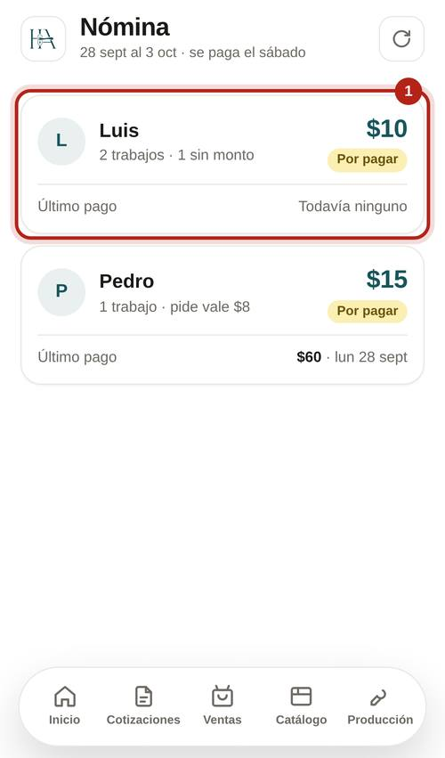
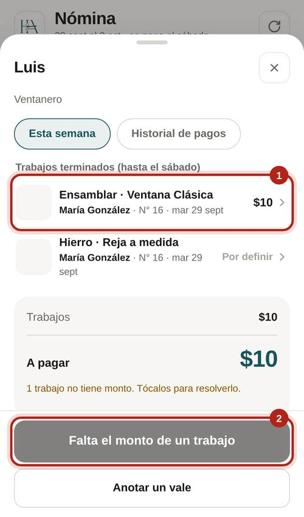
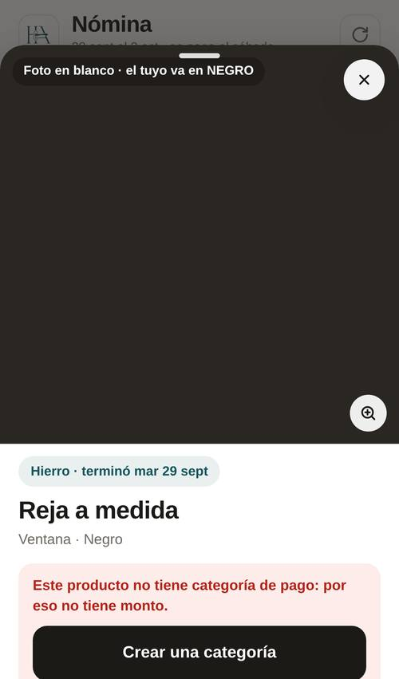
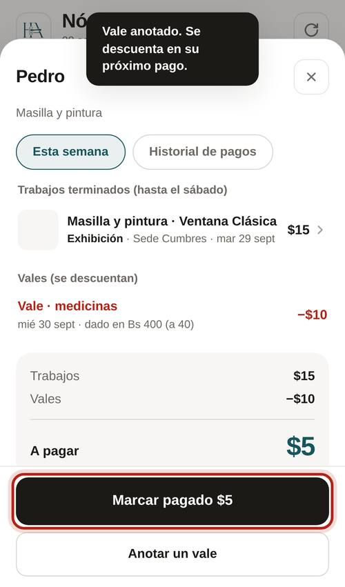
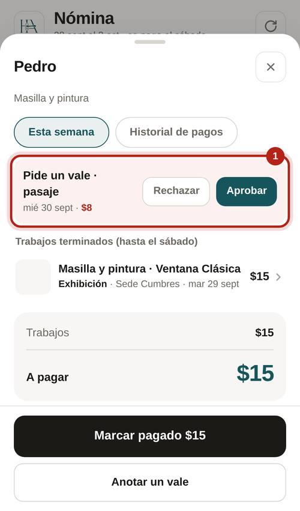
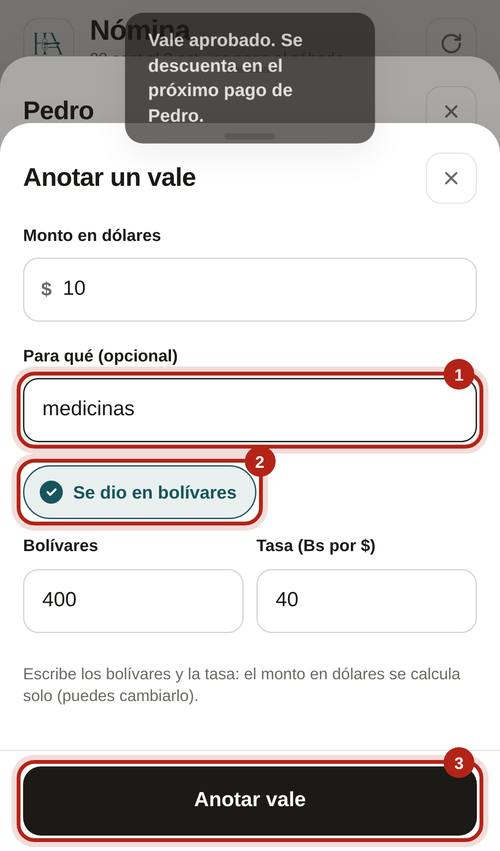
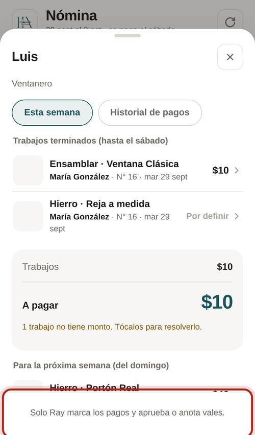

Entra desde Inicio › Nómina. Cada trabajador con lo que le toca y su último pago.

Solo Ray. Gualfredo ve todo pero no tiene el botón.
Toca un trabajo para ver su foto contra la del catálogo y el monto.
El botón dice "Falta el monto de un trabajo". Toca ese trabajo y crea o asigna su categoría.


Al trabajador le llega "Te pagaron $X" y lo ve en su historial.

Adelantos que se descuentan del próximo pago.
Te llega "Vale pedido". Abre su ficha y toca "Aprobar" o "Rechazar". A él le llega la respuesta.

Monto en dólares y para qué. Si se dio en bolívares, escribe los bolívares y la tasa: el dólar se calcula solo.


Así lo ve Gualfredo: todo, sin botones.
"Jesús pide $10 · pasaje". Les llega a los administradores.
En Inicio sale "X vales por aprobar". Al trabajador le llegan "Vale aprobado", "Vale rechazado", "Vale anotado" y "Te pagaron".